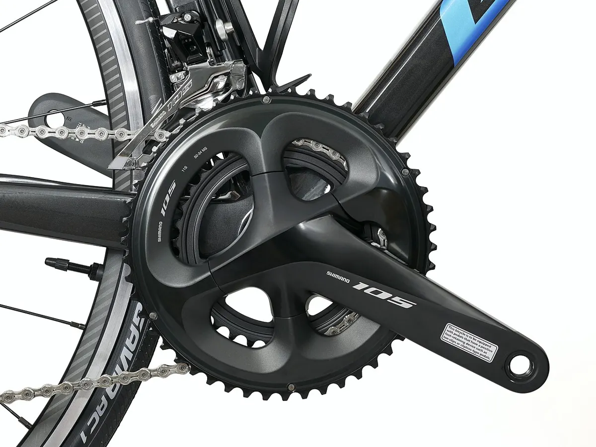

Трансмиссия
Система шатунов
Crankset
Шатуны со звёздами: превращают усилие ног во вращение и передают его цепи.
Состоит из правого шатуна со звёздами, левого шатуна и (в современных системах) вала. Длина шатунов обычно 165–175 мм. Количество звёзд: 1 (1×), 2 (2×), 3 (3×).
Шатуны крепятся на вал каретки по-разному: квадрат, Octalink, ISIS, Hollowtech II (вал на правом шатуне, левый стягивается двумя болтами), SRAM DUB и др.
Факты и стандарты
- Hollowtech II: крышка левого шатуна затягивается от руки ключом TL-FC16/18 (0,7–1,5 Н·м), затем болты шатуна 12–14 Н·м (данные Shimano)
- Квадрат: болт шатуна Shimano 35–50 Н·м
